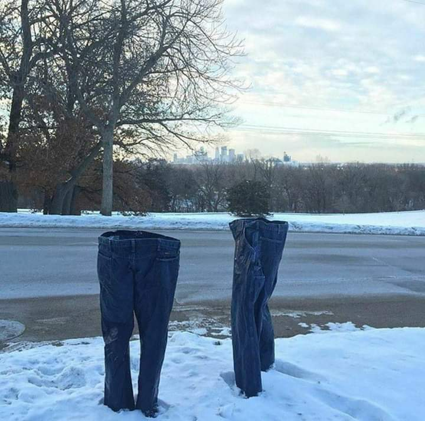

Calças?
Perto do fim de janeiro de 2003 nosso instituto veio recebendo ligações em peso de pessoas que alegavam presenciar fenômenos peculiares no Chile, esse fenomeno consistia em calças, isso mesmo, calças andando sozinhas pelas ruas, portanto acionamos nossa equipe internacional para checar esse caso
Chegando em Santiago, fomos direto ao ponto em que diziam estar vendo as tais calças com mais frequência, armamos um posto de comando improvisado em uma casa abandonada e ficamos esperando algo acontecer
Depois de algumas horas esperando conseguimos flagrar duas calças paradas em frente a casa na qual estávamos, rapidamente fomos tentar capturá-las, porém aparentemente elas possuem um sentido bastante apurado e sentiram que estávamos indo, uma delas fugiu, mas ao menos capturamos uma.
Após isso fomos para nossa unidade chilena para fazer testes com a anomalia, a seguir mostrará um pequeno diário dos acontecimentos em alguns dias dos experimentos.
DIA 1: A CALÇA DA MARCA GUCCI ESATAVA BASTANTE AGITADA, ESTAVA ESPERNEANDO A FIM DE SAIR DO CONFINAMENTO EM QUE SE ENCONTRAVA, CONSGUIMOS CAPTAR ALGUNS SONS SAINDO DELA. PODERIA UMA CALÇA TER A CAPACIDADE DE FALAR?
DIA 2: TENTAMOS FAZER CONTATO MAIS PRÓXIMO, UM DE NOSSOS AGENTES ENTROU NA SALA ONDE A ANOMALIA ESTAVA E TENTOU SE APROXIMAR GENTILMENTE, MAS A CALÇA PARECIA AINDA GUARDAR MÁGOAS, E DE ALGUM MODO PARECIA SENTIR FALTA DE SUA AMIGA, A OUTRA CALÇA QUE FUGIU.
DIA 3 : NOVAMENTE TENTAMOS FAZER UM CONTATO MAIS GENTIL, E ELA AGORA PARECIA ESTAR UM POUCO MAIS A VONTADE, PERGUNTAMOS SE ELA TINHA ALGUMA MANEIRA DE SE COMUNICAR E ELA APONTOU COM A BARRA DA CALÇA PARA UMA CANETA E PAPEL QUE ESTAVA PRÓXIMO, RAPIDAMENTE ENTREGAMOS E ELA COMEÇOU A ESCREVER NO PAPEL REPETIDAS VEZES: DO I GOT THE DRIP SIR? DO I?. TOMAMOS O PAPEL DELA E A MESMA COMEÇOU A DEMONSTRAR AGRESSIVIDADE CHUTANDO UM DE NOSSOS AGENTES, NÃO TIVEMOS ESCOLHA A NÃO SER PRENDÊ-LA NA SALA DE CONTENÇÃO.
DIA 4: O DIA TERIA SIDO NORMAL SE A ANOMALIA CALÇA NÃO TIVESSE FUGIDO DE NOSSA UNIDADE, AINDA NÃO SABEMOS AO CERTO COMO E QUANDO ISSO OCORREU, O MÁXIMO QUE CONSEGUIMOS ENCONTRAR FOI UM PEDAÇO DE JEANS RASGADO PERTO DA VENTILAÇÃO.
DIA 5: NOSSA EQUIPE ESTÁ EM PESO PATRULHANDO AS RUAS DE SANTIAGO EM BUSCA DA CALÇA. CHEGAMOS AO PONTO DE TER QUE TIRAR A CALÇA DE CIVIS PARA TER CERTEZA SE ERAM MESMO CALÇAS COMUNS. O POVO JÁ ESTÁ COM MUITO MEDO, PORÉM PELA PRIMEIRA VEZ, TAMBÉM ESTAMOS.
Ainda não encontramos a anomalia, deixaremos uma imagem abaixo para caso alguém avistar entrar em contato conosco, a ITCAT agradece, atualizaremos o caso na medida do possível.
Nos sentimos envergonhados por ter deixado isso acontecer, mas eu prometo que eu mesmo irei resolver esse problema
Jairo, Clóvis (2003)